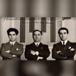
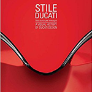
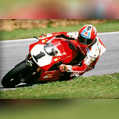
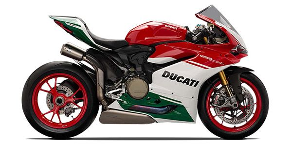

"In Lightness My Strength."-Ducati slogan-
History

In 1926 Antonio Cavalieri Ducati and his three sons, Adriano, Marcello, and Bruno Cavalieri Ducati; founded Società Scientifica Radio Brevetti Ducati in Bologna to produce vacuum tubes, condensers and other radio components. In 1935 they had become successful enough to enable construction of a new factory in the Borgo Panigale area of the city. Production was maintained during World War II, despite the Ducati factory being a repeated target of Allied bombing.
This first Ducati motorcycle was a 48 cc bike weighing 98 pounds (44 kg), with a top speed of 40 mph (64 km/h), and had a 15 mm carburetor (0.59-inch) giving just under 200 mpg‑US (1.2 L/100 km; 240 mpg‑imp). Ducati soon dropped the Cucciolo name in favor of "55M" and "65TL"
In the 1960s, Ducati earned its place in motorcycling history by producing the fastest 250 cc road bike then available, the Mach 1.In the 1970s Ducati began producing large-displacement V-twin motorcycles and in 1973, released a V-twin with the trademarked desmodromic valve design. In 1985, Cagiva bought Ducati and planned to rebadge Ducati motorcycles with the "Cagiva" name.
Motorcycle designs

Ducati is best known for high-performance motorcycles characterized by large-capacity four-stroke, 90° V-twin engines, with a desmodromic valve design. Ducati refers to this configuration as L-twin because one cylinder is vertical while the other is horizontal, making it look like a letter "L". Modern Ducatis remain among the dominant performance motorcycles available today partly because of the desmodromic valve design, which is nearing its 50th year of use. Desmodromic valves are closed with a separate, dedicated cam lobe and lifter instead of the conventional valve springs used in most internal combustion engines in consumer vehicles. This allows the cams to have a more radical profile, thus opening and closing the valves more quickly without the risk of valve-float, which causes a loss of power that is likely when using a "passive" closing mechanism under the same conditions.
While most other manufacturers use wet clutches (with the spinning parts bathed in oil) Ducati previously used multiplate dry clutches in many of their motorcycles. The dry clutch eliminates the power loss from oil viscosity drag on the engine, even though the engagement may not be as smooth as the oil-bath versions, but the clutch plates can wear more rapidly. Ducati has converted to wet clutches across their current product lines.
Ducati also extensively uses a trellis frame, although Ducati's MotoGP project broke with this tradition by introducing a revolutionary carbon fibre frame for the Ducati Desmosedici GP9.
Racing history

Ducati's history with motorsport began with speed records on Cucciolo motorized bicycle factory racers in 1951, followed in 1954 with bringing in Fabio Taglioni to found a road-racing program with the 100 Gran Sport. As of 2009, Ducati was still pursuing the "win on Sunday, sell on Monday" business model and spending 10% of company revenues, €40 million, on its racing business.
Ducati rejoined Grand Prix motorcycle racing in 2003, after a 30-year absence. On 23 September 2007, Casey Stoner clinched his and Ducati's first Grand Prix World Championship.
When Ducati re-joined MotoGP in 2003, MotoGP had changed its rules to allow four-stroke 990 cc engines to race. At the time Ducati was the fastest bike. In 2007, MotoGP reduced the engine size to 800 cc (49 cu in), and Ducati continued to be the fastest with a bike that was markedly quicker than its rivals as was displayed by Casey Stoner on tracks with long straights.
For 2009, Ducati Marlboro Team campaigned their Desmosedici GP9 with former World Champions Casey Stoner and Nicky Hayden. Ducati also supplied customer bikes to Pramac Racing, with Mika Kallio and Niccolò Canepa riding for the team in 2009.
Nine-time world champion Valentino Rossi rode for Ducati Corse for the 2011 and 2012 seasons. Rossi returned to the Yamaha team for the 2013 season.
For 2013, Ducati Marlboro Team raced with Nicky Hayden and the Italian rider Andrea Dovizioso. In 2014 Cal Crutchlow teamed up with Dovizioso for the season, and he left at the end of the year.
In 2015, Ducati Marlboro Team, under the control of the new race team director Gigi Dall'Igna and the new Desmosedici GP15, raced with two Italian riders: Andrea Dovizioso and Andrea Iannone. Dovizioso and Iannone returned for another season in 2016 with Michele Pirro as official tester. As well as this, Casey Stoner also tested Ducati machinery during the season. In 2017, Ducati Marlboro Team will race another season with Andrea Dovizioso and his new teammate Jorge Lorenzo, who has joined the Ducati team from Yamaha Factory Racing with a two seasons contract.
Last model specifications:Ducati 1299r Panigale
